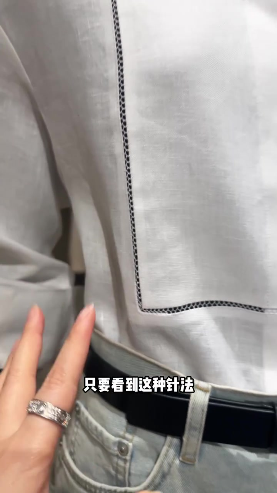
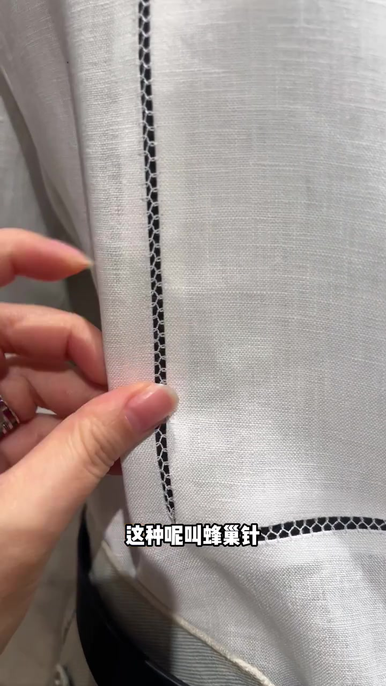
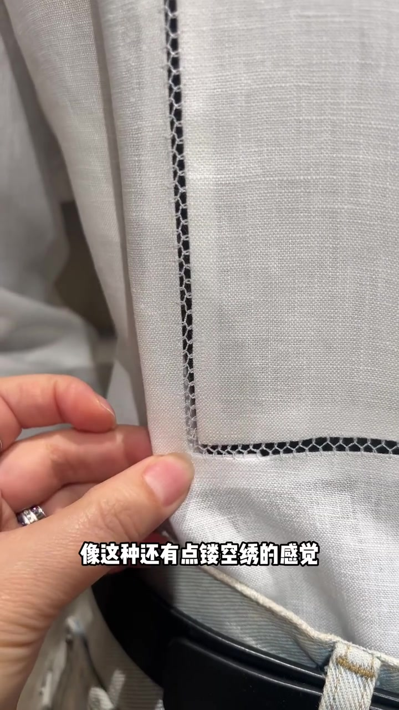
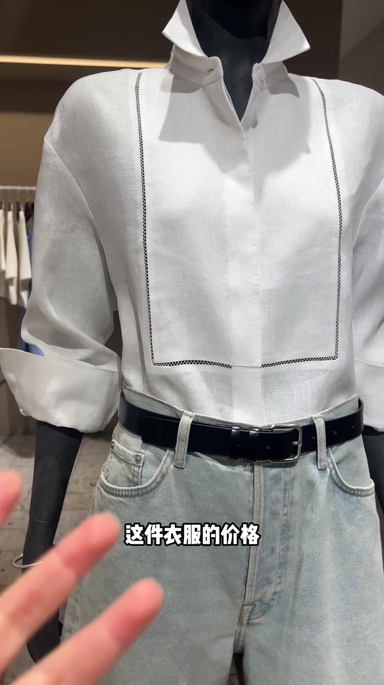
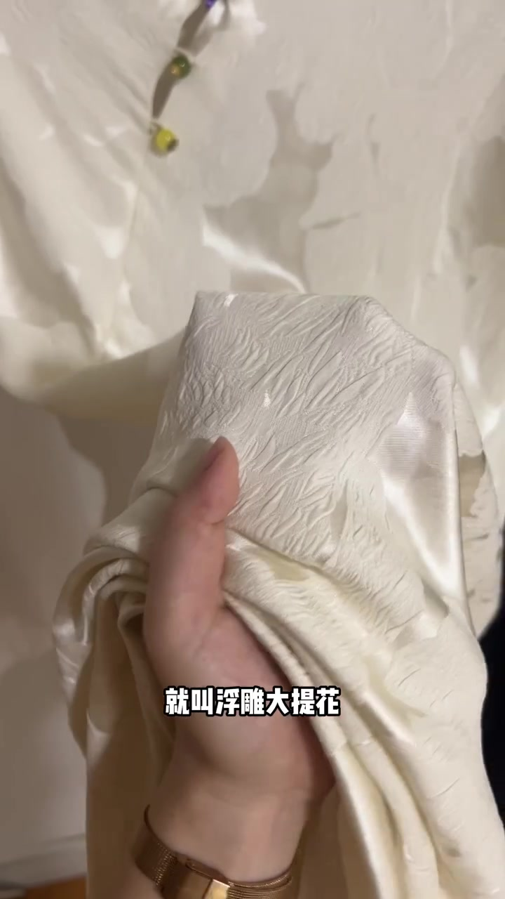
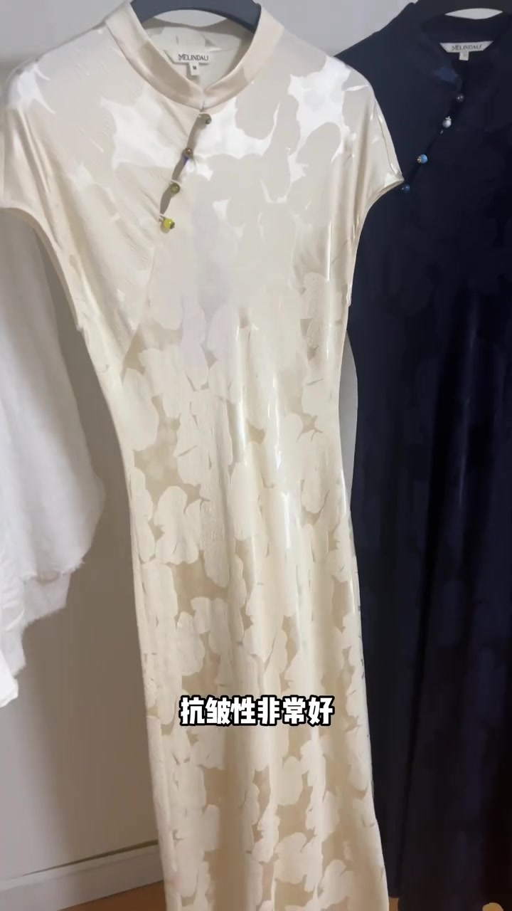
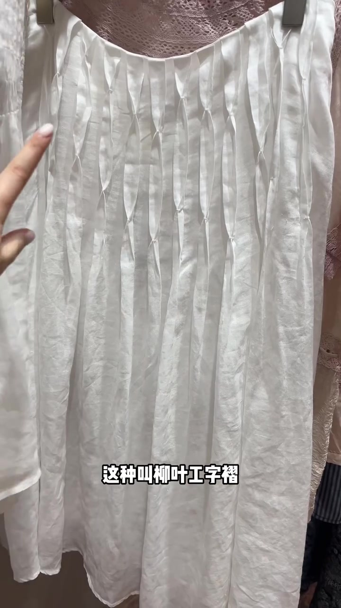
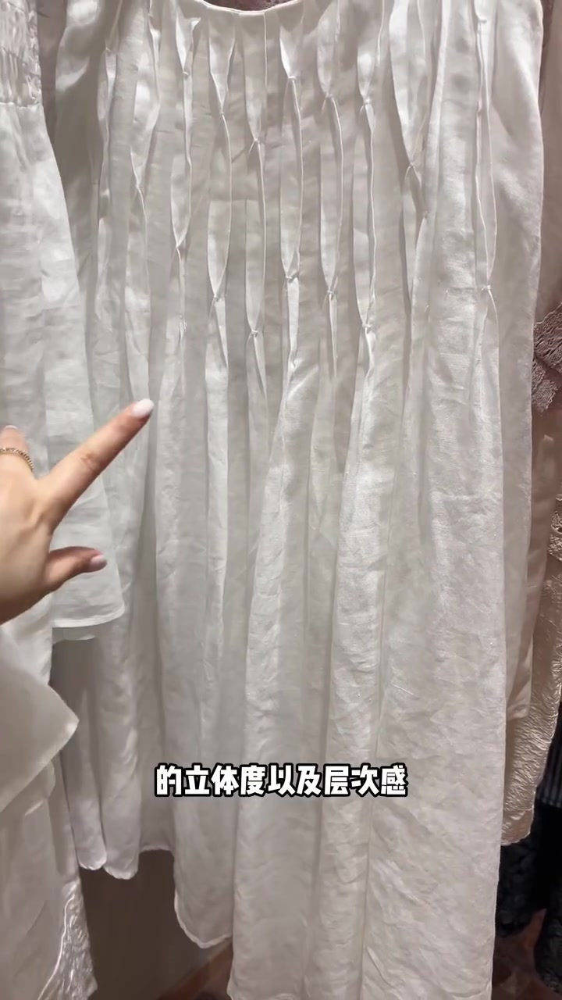

开场：只要看到这种针法，价格通常不便宜
镜头先贴到白衬衫前胸的开孔针迹，字幕直接抛出判断：只要看到这种针法，那衣服的价格肯定不便宜。主讲人随即点名——这种叫蜂巢针。
她补充背景：蜂巢针原来多用在旗袍上起固定作用，只能用手工缝纫；现在则常见于左右拼接。特写里，黑线在白色面料上连出蜂窝状小孔，手指一捏，镂空感很明显。她说“像这种还有点镂空绣的感觉”，并判断这类效果基本上是特种机做的。
接着把价格落到具体区间：只要看到这种针法，这件衣服的价格基本上都在 500 以上。这是作者的店内经验立场，不是全市场统一标价规则。
可见字幕校正：Whisper 把「针法／蜂巢针／手工缝纫／镂空绣／500以上」误识为「蒸发／风潮针／缝认／楼空秀／500亿上」。下文按画面字幕叙述，文末转录区仍保留原始分段。




第二组：浮雕大提花，立体花纹背后是更复杂的纺织工艺
话题切到一件奶油色旗袍式长裙。主讲人捏起面料，字幕写“表面花纹非常立体”，随后给出名称：像浮雕似的，就叫浮雕大提花。画面里花纹高低起伏，抓一把仍能看出层次。
她把价格逻辑接在工艺复杂度上：像这种纺织工艺相对比较复杂，所以一般价格都不会太便宜。接着强调面料优点——除了立体美观外，最大的优点是抗皱性非常好。领标附近可见品牌字样，但本片重点不在品牌背书，而在可观察的提花肌理。


长裙选型：斜裁面料带来包容与垂坠
同一件长裙继续被当作示范。字幕提醒：还有长裙一定要选斜裁面料。作者当场用手臂拉开衣身，说明瘦点胖点都可以穿——它没有紧绷感，包容性更好；而且垂坠感比较好，更加能修饰身材。
这里的“一定要选”是口播强调语气。斜裁确实常见于提升垂坠与活动余量，但是否适用于所有长裙版型，仍取决于设计目标与面料弹性，不宜当成唯一标准。
收尾：柳叶工字褶，用立体度给白裙子加层次
最后一组切到白裙上的褶饰。字幕命名：这种叫柳叶工字褶。做法被拆成两步——先把面料做出工字褶，再在上面加上这些固定的点，做出柳叶感。特写里，竖褶被间断钉住，形成一排细长叶形开口。
作者解释目的：为了增加立体度以及层次感，让白裙子没有那么单调。收尾一句话把消费动机说死——买这种裙子，更多是为设计买单。整段没有给出具体售价，却把“显贵”重新定义成：看得见的工艺步骤与设计意图。

